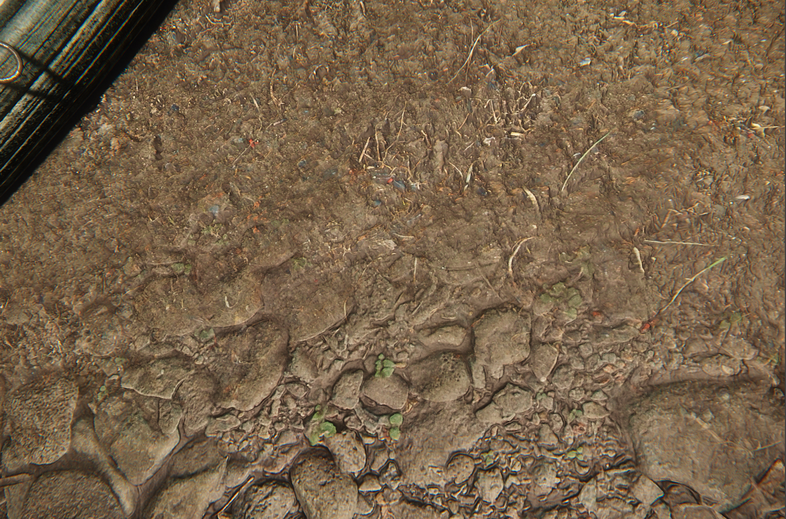
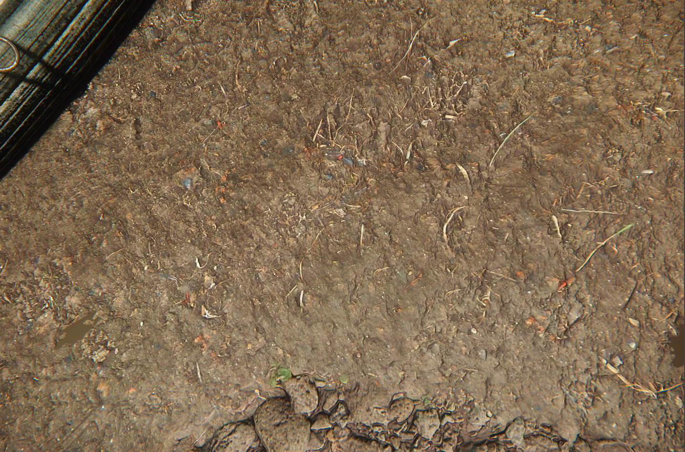
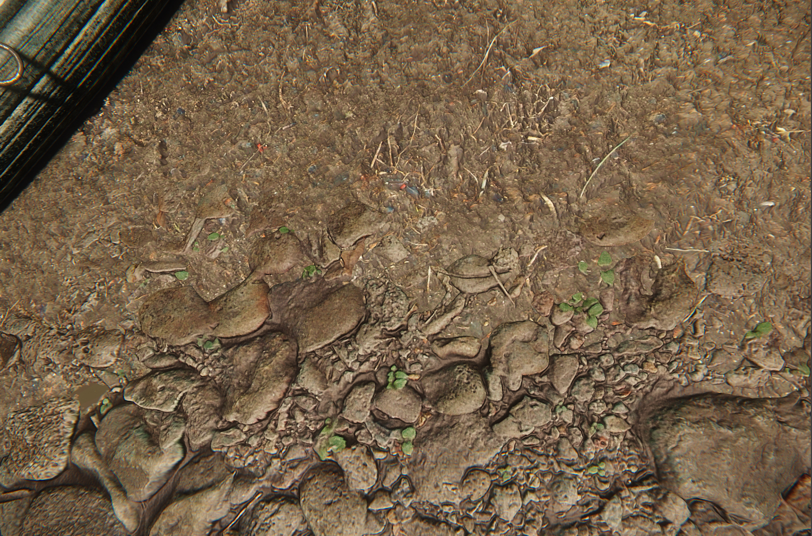
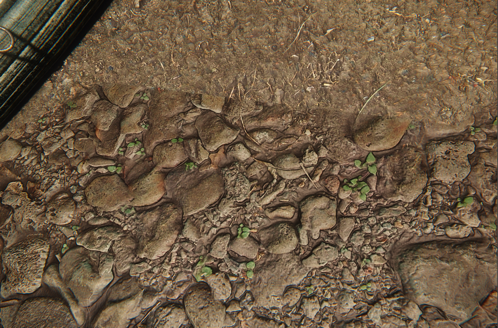
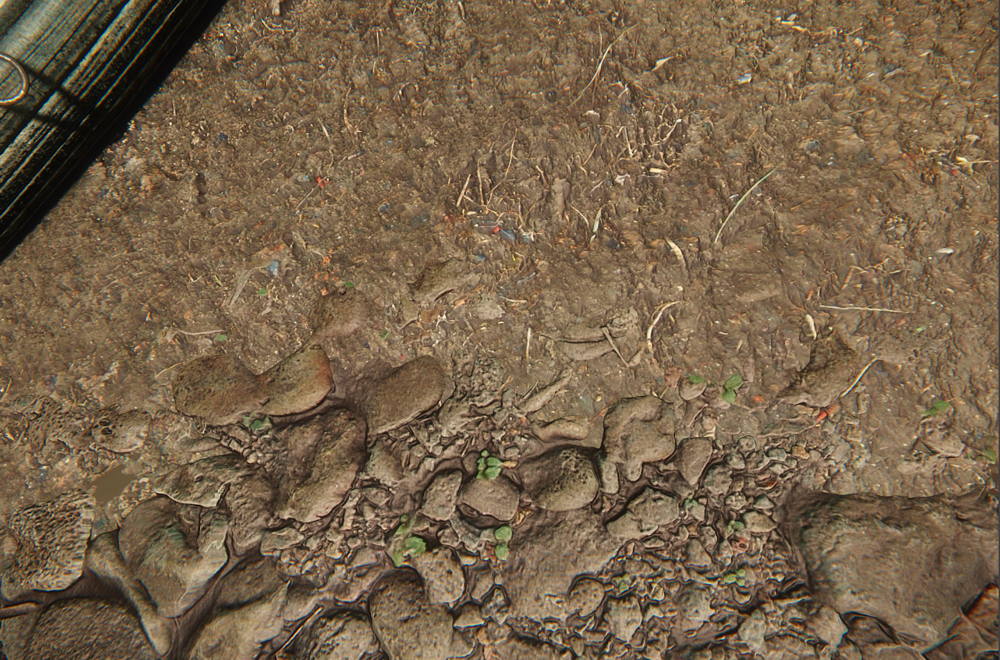
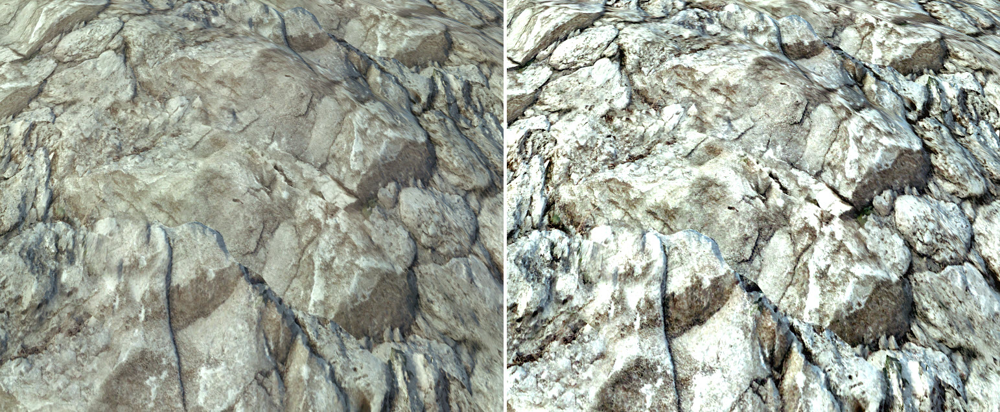
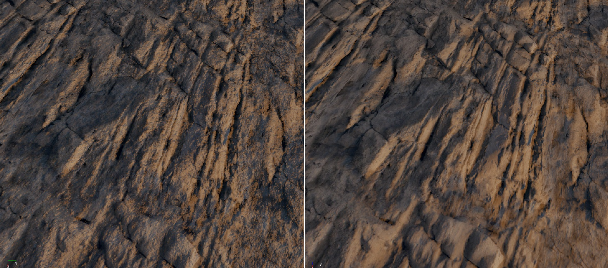

Overview
The Terrain.Layer shader is used for all the terrain materials in order to paint terrain texture layers. When creating even the most simple terrain material, you always need a Diffuse map.
Since the terrain is never flat, you can make your terrain more interesting by using a Bumpmap on it.
Shader Params
Shader Param | Description | Shader Gen Option |
|---|---|---|
Blend Factor | Change the visibility of the blended layer. Heightmap required. | Default (but requires OBM or POM) |
Blend Falloff | Change the falloff of blending. Heightmap required. | Default (but requires OBM or POM) |
Detail bump scale | Detail mapping shader generation parameter must be enabled first. See Unified Detail Mapping for more information. | Detail Mapping |
Detail diffuse scale | Detail mapping shader generation parameter must be enabled first. See Unified Detail Mapping for more information. | Detail Mapping |
Detail gloss scale | Detail mapping shader generation parameter must be enabled first. See Unified Detail Mapping for more information. | Detail Mapping |
DetailTextureStrength | Sets the amount the Diffuse map, which is your Detail Texture is visible over the Layer Texture. | Default |
Height bias | Offset Bump Mapping (OBM) shader generation parameter must be enabled first. See Parallax Occlusion Mapping for more information. | Offset bump mapping |
OBM Displacement | OBM shader generation parameter must be enabled first. | Offset bump mapping |
POM Displacement | POM shader generation parameter must be enabled first. See Parallax Occlusion Mapping for more information. | Parallax occlusion mapping |
Self shadow strength | POM shader generation parameter must be enabled first. See Parallax Occlusion Mapping for more information. | Parallax occlusion mapping |
Soft Depth Test Distance Ratio | Soft Depth Test shader generation parameter must be enabled first. | Soft Depth Test |
Soft Depth Test Range | Soft Depth Test shader generation parameter must be enabled first. | Soft Depth Test |
Shader Gen Params
Shader Gen Param | Description |
|---|---|
Offset Bump Mapping (OBM) | Uses offset bump mapping. Requires a height map. |
Detail mapping | Uses detail mapping. See Unified Detail Mapping for more information. |
Parallax occlusion mapping (POM) | Uses parallax occlusion mapping. Requires a height map. See Parallax Occlusion Mapping for more information. |
Soft Depth Test | Allows you to enable soft depth test. |
Use Original Diffuse Map | Uses the original diffuse map. |
Material Settings
By default the Terrain shader has several parameters, most notably for 3.5+ builds is the option to adjust the blending of different terrain layers instead of relying on basic fading between each other.
In order to utilize this you first need to have a height map plugged in with either OBM or POM enabled (depending on which system spec you are using) because the blending will actually use the height map to determine how the materials blend together.
For example, if you have pebbles on one material and dirt as another you will likely want the pebbles to accurately stand out from the dirt.
Examples
 |
| No POM or OBM |
|---|
Blending
 |  |
| Blend Factor 0 | Blend Factor 16 |
|---|
 |  |
| Blend Falloff 0 | Blend Falloff 128 |
|---|
 |  |
| Low vs High Detail Texture Strength | Without and without Detail Bumpmap |
|---|